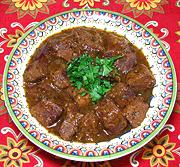

|
Beef in Melon SauceSpain - Guisado de Melón | ||||
| Serves: Effort: Sched: DoAhead: |
4 main *** 2 hrs Yes |
Beef stewed in an ingrigueing mildly sweet sauce. It may be from around Valencia, which grows a lot of fruit and was long under Moorish influence. See Note-3 for serving suggestions. | |||
|
|
2 2 4 ------ 2 2 1/2 1/8 2/3 1/4 ------ 2-1/2 1/2 |
# # oz --- T t t t t t --- T c |
Beef (1) Melon (2) Onions -- Seasonings Parsley Flour Paprika Cinnamon Salt Pepper ---------- Olive Oil Chicken Stock |
PREP - (20 min)
|